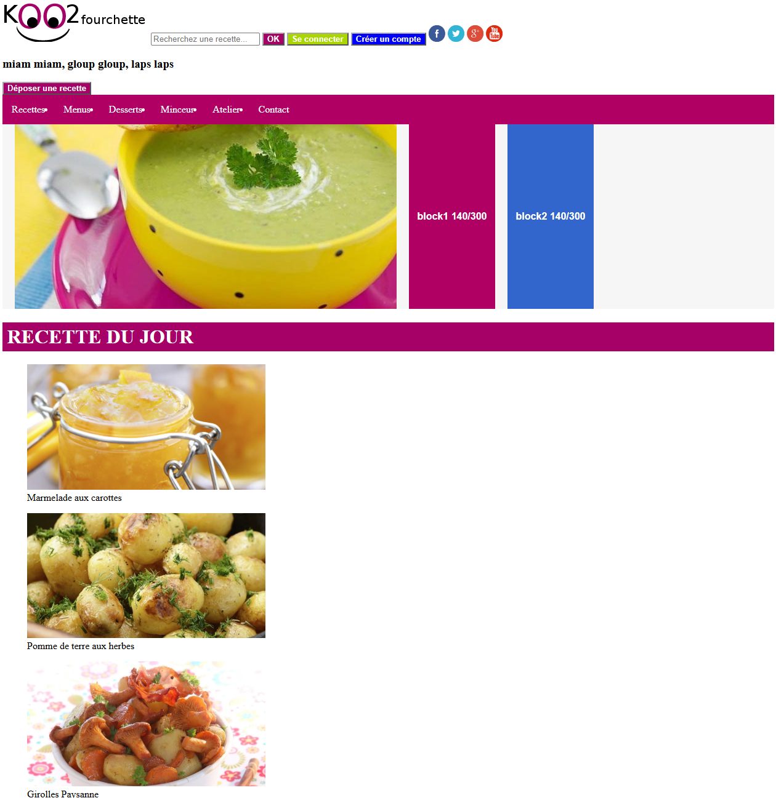

Koo2fourchette
Développement d'un site web de recettes de cuisine permettant de présenter différentes recettes et de gérer des comptes utilisateurs.
Aperçu du projet Koo2fourchette
Voici une capture d'écran de l'interface du site Koo2fourchette, réalisé dans le cadre de ma formation BTS SIO SLAM.

Présentation du projet
KOO2fourchette consiste à développer un site web consacré aux recettes de cuisine. L'application présente différentes recettes, des images de plats et un espace permettant aux utilisateurs de créer un compte et de se connecter.
Ce projet m'a permis de découvrir les différentes étapes du développement d'un site web et de travailler avec plusieurs technologies complémentaires.
Objectifs du projet
Les principaux objectifs du projet étaient les suivants :
- Créer la structure d'un site web avec HTML.
- Mettre en forme les différentes pages avec CSS.
- Présenter des recettes de cuisine accompagnées d'images.
- Mettre en place une base de données MySQL.
- Développer un système d'inscription et de connexion avec PHP.
- Gérer les sessions des utilisateurs.
- Comprendre les échanges entre une application PHP et une base de données.
Technologies utilisées
HTML et CSS ont été utilisés pour structurer et mettre en forme les pages.
PHP permet de gérer l'inscription, l'authentification et les sessions des utilisateurs.
MySQL permet de stocker les informations relatives aux membres, aux catégories et aux recettes.
Fonctionnalités développées
- Page d'accueil présentant plusieurs recettes de cuisine.
- Affichage d'images et de titres de recettes.
- Formulaire de création de compte.
- Formulaire de connexion.
- Vérification des identifiants enregistrés dans la base de données.
- Gestion des sessions PHP.
- Déconnexion de l'utilisateur.
Certaines fonctionnalités, notamment la recherche et le dépôt de recettes, sont représentées dans l'interface, mais ne sont pas encore opérationnelles.
Base de données
Le projet s'appuie sur une base de données MySQL nommée koo_2_fourchette.
Elle contient notamment trois tables principales :
- membres : informations des utilisateurs, identifiants et mots de passe.
- recettes : informations sur les recettes, ingrédients, préparation et temps de cuisson.
- categories : classement des recettes selon leurs catégories.
La connexion entre PHP et MySQL est réalisée à l'aide de PDO. Les requêtes préparées sont utilisées dans les formulaires d'inscription et de connexion.
Travail réalisé
Le projet comprend plusieurs parties techniques :
- Création de la structure HTML des différentes pages.
- Mise en forme de l'interface avec CSS.
- Intégration des images et des éléments de navigation.
- Développement des formulaires d'inscription et de connexion.
- Utilisation de PHP pour gérer les sessions.
- Connexion à une base MySQL avec PDO.
Ce travail m'a permis de mieux comprendre l'organisation d'un projet web et les interactions entre les différentes technologies.
Compétences développées
- Structurer une page web avec HTML.
- Mettre en forme un site avec CSS.
- Comprendre le fonctionnement des formulaires HTML.
- Utiliser PHP pour traiter des données côté serveur.
- Communiquer avec une base MySQL.
- Comprendre les principes d'authentification et de session.
Bilan du projet
Koo2fourchette fait partie de mes premiers projets de développement web.
Il m'a permis de découvrir la création d'un site comportant une interface utilisateur et des traitements côté serveur.
J'ai également pu approfondir mes connaissances en HTML, CSS, PHP et MySQL.
Ce projet constitue une première expérience dans le développement d'applications web.